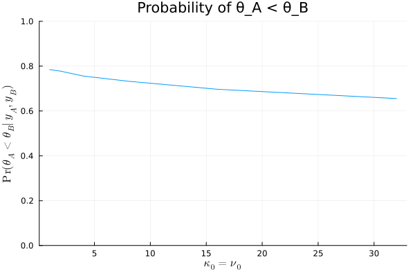

5.2
Answers of exercises on Hoff, A first course in Bayesian statistical methods, Chapter 5
Table of Contents
answer
μ₀ = 75 σ₀² = 100 # %% n_A = 16 n_B = 16 ȳ_A = 75.2 ȳ_B = 77.5 s_A = 7.3 s_B = 8.1 calc_μn = (n, ȳ, μ₀, κ₀) -> (κ₀ * μ₀ + n * ȳ) / (κ₀ + n) calc_σ²n = (n, ȳ, s², σ₀², κ₀, ν₀) -> (ν₀ * σ₀² + (n-1) * s² + (κ₀ * n * (ȳ - μ₀)^2) / (κ₀ + n)) / (ν₀ + n) function calc_posterior_param(n, ȳ, s², μ₀, σ₀², κ₀, ν₀) κn = κ₀ + n νn = ν₀ + n μn = (κ₀ * μ₀ + n * ȳ) / κn σ²n = (ν₀ * σ₀² + (n-1) * s² + (κ₀ * n * (ȳ - μ₀)^2)/ κn ) / νn return κn, νn, μn, σ²n end function calc_mc(n, ȳ, s², μ₀, σ₀², κ₀, ν₀, n_mc) κn, νn, μn, σ²n = calc_posterior_param(n, ȳ, s², μ₀, σ₀², κ₀, ν₀) dist_inverse_σ² = Gamma(νn/2, 2/(νn * σ²n)) σ²_mc = rand(dist_inverse_σ², n_mc) .^ -1 calc_θ_mc = σ² -> rand(Normal(μn, sqrt(σ²/κn))) θ_mc = calc_θ_mc.(σ²_mc) return θ_mc, sqrt.(σ²_mc) end m = 10000 prob_A_lt_B = [] for k in [2^i for i in 0:5] κ₀, ν₀ = k, k θ_mc_A, σ_mc_A = calc_mc(n_A, ȳ_A, s_A^2, μ₀, σ₀², κ₀, ν₀, m) θ_mc_B, σ_mc_B = calc_mc(n_B, ȳ_B, s_B^2, μ₀, σ₀², κ₀, ν₀, m) prob = mean(θ_mc_A .< θ_mc_B) push!(prob_A_lt_B, prob) end

prior のパラメータ \(\kappa_0, \nu_0\) を大きくとるほど、事後分布に対するデータの影響が相対的に小さくなり、 \(\theta_A < \theta_B\)の事後確率は減少していることがわかるが、同時に \(\kappa_0, \nu_0\)の値を上の範囲でいくら変えても、 \(\theta_A < \theta_B\)の確率は 70%程度であることがいえる。